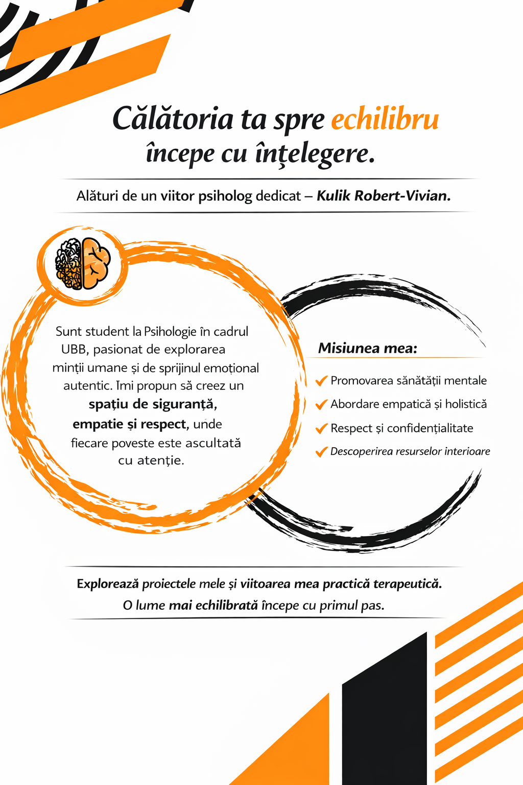

Portofoliu Academic & Proiecte
Această secțiune reflectă eforturile mele de cercetare, analiza studiilor de caz și contribuțiile mele în cadrul facultății.
Inițiativă de Informare: Contul de Socializare Psihologie
Scop: Distribuirea de informații validate științific, demontarea miturilor și promovarea conceptelor cheie din domeniul psihologiei și al sănătății mintale.
Domenii acoperite: Tehnici de mindfulness, gestionarea stresului academic, noțiuni de psihologia dezvoltării.
Aptitudini demonstrate: Capacitatea de a sintetiza informații complexe, comunicare eficientă și utilizarea mediilor digitale pentru educație.
Vizitează Profilul InstagramSunt deschis propunerilor de colaborare pentru extinderea acestor inițiative.
Resurse Vizuale și Infografice

{kind=link}
{kind=link}
Campanie Publicitară (Asistată de AI)
Proiect experimental de promovare a sănătății mintale folosind instrumente generative.
1. Reclamă Print (Design AI)

Vizual creat pentru campanii de conștientizare în mediul offline.
Descarcă Format Print{kind=link}
2. Reclamă Audio (Voce generată de AI)
Spot publicitar radio/podcast despre importanța mindfulness-ului.
3. Reclamă Video (Simulare AI)
Scurt material video creat cu instrumente de animație AI.